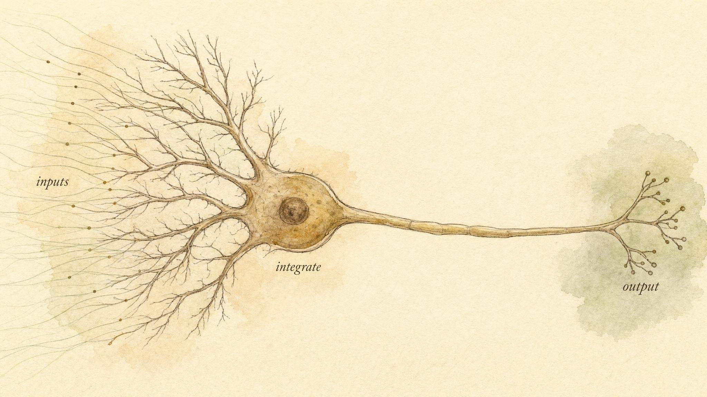
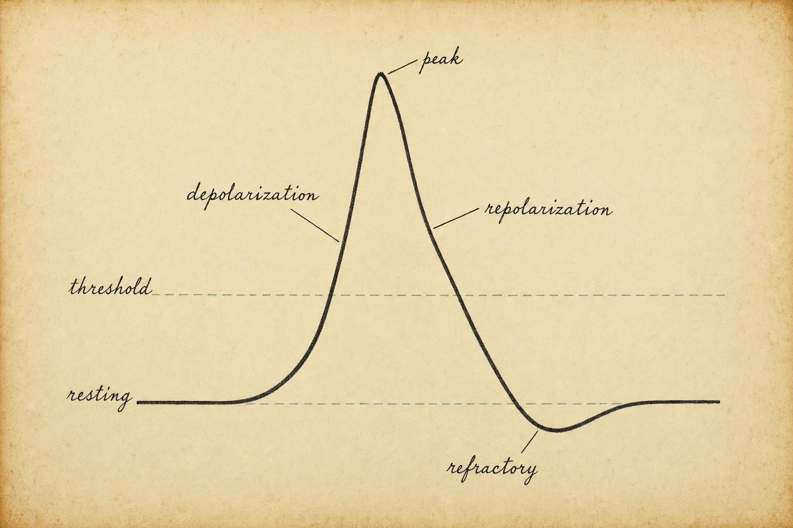
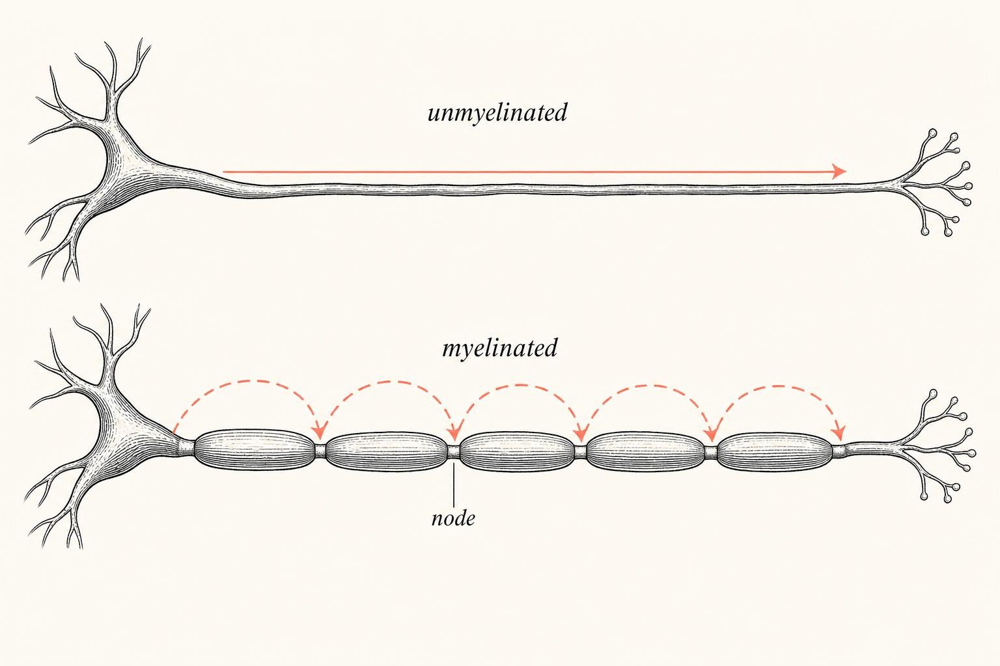

The Spark That Starts Everything
How one cell, by briefly flipping its charge, becomes the working unit of thought, movement, and sensation.
Put your hand flat on a table and press down until you feel the pressure gathering in your fingertips. In the fraction of a second it took you to notice that pressure, a chain of tiny electrical events raced up your arm, hopped between cells, crossed gaps, and arrived in your brain as the plain fact of contact. Nothing about that experience feels electrical. It feels like touch. But underneath, the entire event was assembled out of one repeated trick performed by billions of cells: a brief, sharp flip of voltage across a membrane, passed along a wire, then reset.
That flip is called an action potential, and it is the single most important idea in this entire course. Every chapter that follows, whether it covers circuits, chemical messengers, reflexes, sensation, movement, learning, or sleep, is built from this one event, repeated in different arrangements. So we are going to take our time with it here, at the beginning, because very little later will make sense if this chapter does not.
A learner working through this course, we will call him Theo, arrived at Chapter 1 with a theory already fully formed. He had read a popular science article that compared neurons to household wiring, and the comparison had lodged itself in his mind as settled fact: press harder on something, the article implied, and the nerve simply carries more voltage down the line, the way turning a dimmer switch sends more current through a lamp cord. A gentle touch would be a small signal. A crushing grip would be a big one, riding the same wire at a higher amplitude. It was a tidy picture, easy to hold in the mind, and almost entirely wrong. Theo is not a case to be solved and not a patient of this course. He is a stand-in for a very common and very reasonable mistake, the kind that arises whenever a genuinely electrical process gets described with an everyday electrical metaphor that quietly leaves out the one detail that matters most. By the end of this chapter you, and Theo, will have a far better model of what is actually happening, one where the signal itself is fixed in size no matter how hard the input pushes, and where intensity is written somewhere else entirely.
By the end of this chapter you will be able to explain, in plain language, how a neuron decides to fire, why that firing is described as all-or-nothing, and how a single cell manages to tell your brain the difference between a gentle touch and a crushing grip without ever changing the size of its own signal. We will build the explanation piece by piece: first the neuron as a decision-making device, then the resting membrane as a kind of charged battery, then the spike itself and its built-in reset, then the question of speed, and finally the answer to the puzzle Theo's dimmer-switch model could never solve.
Notice what kind of chapter this is before we begin. It is not a tour of anatomy for its own sake, and it is not a vocabulary list to memorize and forget. It is closer to a single argument, built in stages, where each new idea only makes sense once the one before it is secure. The resting potential matters because the spike depends on it. The spike is all-or-nothing because that constraint is what makes long-distance signaling reliable. Frequency coding exists because the all-or-nothing rule would otherwise leave no room to express intensity. Read the chapter in order, and by the final section a genuinely elegant piece of engineering, built by evolution rather than by an engineer, should come into full view.
The neuron as a decision-maker
It is tempting to open a chapter like this with an anatomical diagram covered in arrows, asking you to memorize dendrite, soma, axon, terminal. We will meet those parts, but the labels are not the point. The point is what the parts do. A neuron is not a static structure to be annotated; it is a tiny device that repeatedly answers one question: given everything I am hearing right now, should I fire or not?
Read the neuron left to right and it tells a three-word story: input, integrate, output. Signals arrive at the branching dendrites. They are summed at the cell body (or soma). And if the sum is large enough, a spike is launched down the long output cable, the axon, toward the next cell in line. This integrate-and-fire logic is so central that neuroscientists have distilled it into a canonical mathematical model, the integrate-and-fire neuron, precisely because it captures the essential behavior with almost nothing else attached: charge accumulates until a threshold is crossed, then a spike is emitted and the counter resets (Burkitt, 2006).
Hold onto the decision-maker metaphor. Everything technical we add from here forward, ions, gates, voltages, myelin, is just detail hung on that frame. A neuron gathers evidence and casts a vote.

The parts, briefly
Let us name the cast so we can use the words freely for the rest of this course. The dendrites are the receiving surface, a bushy tree that dramatically increases how many other cells can talk to this one; some densely branched neurons carry dendritic trees studded with thousands of individual contact points (Kandel et al., 2013). The soma houses the nucleus and acts as the tallying point, the place where the cell keeps the machinery that manufactures its proteins and keeps it alive. The axon initial segment, right where the axon leaves the soma, is the actual polling station: this is where the fire or no fire decision is physically made, because it carries the highest density of the voltage-sensitive channels that start a spike. The axon itself is the transmission line, sometimes only a fraction of a millimeter long, sometimes close to a meter (the axons running from your spinal cord to your toe are famously among the longest cells in your body). And the axon terminals are where this neuron hands its message to the next one, the subject of a later chapter in this course.
Notice already an asymmetry that matters: many inputs, one output. A single neuron may receive thousands of incoming contacts across its dendritic tree but has only one axon carrying one kind of answer. That convergence, many voices in, one decision out, is the physical basis of the integration step, and it is where the interesting computation happens.
None of this happens in isolation, either. Neurons are outnumbered in the nervous system by supporting cells called glia, which do not fire action potentials themselves but make the whole enterprise possible: some, as we will see later in this chapter, wrap axons in insulation; others clean up debris, supply nutrients, or help maintain the delicate chemical environment the neuron needs in order to hold its charge in the first place. It is tempting, when a course opens with the neuron, to imagine the neuron as the entire nervous system in miniature. It is closer to the truth to say the neuron is the unit that does the deciding, while an entire supporting cast keeps the conditions in place that make deciding possible at all.
The membrane is a charged battery
Before a neuron can fire, it has to be ready to fire, and readiness means being charged, like a battery held at tension, waiting. This baseline state is the resting membrane potential, and in most neurons it sits at roughly negative 70 millivolts (mV). That number means the inside of the cell is about 70 thousandths of a volt more negative than the outside. It is a small voltage in absolute terms, but across a membrane only a few nanometers thick, the electric field packed into that thin layer is enormous.
Where does that voltage come from? From ion gradients, differences in the concentration of charged particles across the membrane, and from the selective doors that let some ions cross more easily than others. Two players dominate the story: sodium, abbreviated Na+, which is packed outside the cell, and potassium, abbreviated K+, which is concentrated inside. A tireless molecular pump, the sodium-potassium pump (formally the Na+/K+-ATPase), spends metabolic energy to maintain these gradients, pushing three sodium ions out for every two potassium ions it hauls in, working continuously against the ions' tendency to even out across the membrane (Purves et al., 2001a).
Here is the subtle part, and it is worth sitting with. At rest, the membrane is far more permeable to potassium than to sodium, because potassium's channels are the ones standing open. So potassium, abundant inside, tends to leak outward down its concentration gradient. But every positive potassium ion that leaves makes the inside slightly more negative, and that growing negativity pulls back on the positively charged potassium remaining inside, resisting further loss. The membrane settles at the voltage where those two forces, the chemical push outward and the electrical pull inward, balance each other exactly. That equilibrium point sits close to potassium's own preferred voltage, which is why the resting potential lands near negative 70 mV rather than somewhere else. The Nernst and Goldman-Hodgkin-Katz equations formalize this balance mathematically, but the intuition is enough for our purposes here: the resting potential is the truce struck between concentration gradients and electrical attraction, weighted by which doors happen to be open at any given moment (Purves et al., 2001a).
The reason we call this a battery, and not merely a chemical fact, is that it stores potential energy the cell can release in an instant. A charged battery is not doing anything at rest, but it is poised to. The neuron spends a substantial share of its total energy budget, second by second, just to keep itself charged and tense, precisely so that, when the moment comes, it can discharge explosively. That explosion is the action potential, and everything in the next section depends on the fact that the resting state is not neutral or idle. It is loaded.
It helps to notice how strange this arrangement is compared with how we usually think about rest. We tend to picture rest as the absence of activity. A resting neuron is closer to the opposite: it is a cell working hard, continuously, to hold itself away from equilibrium. If the sodium-potassium pump stopped running for even a few minutes, the ion gradients would begin to collapse and the resting potential would drift toward zero, leaving the cell unable to fire a normal spike at all. Readiness, in other words, is not free. It is manufactured, moment to moment, by active transport.
It is worth being precise about what negative 70 mV actually represents, because the number is easy to memorize and easy to misread. It is not a fixed law of nature the way a physical constant is; it is an equilibrium point that shifts if the underlying ingredients shift. Change the concentration gradient of potassium, or change how many potassium channels happen to be open at a given moment, and the resting potential moves with it. Textbook treatments of the neuron often present negative 70 mV as though it were carved into the cell, when it is better understood as the momentary answer to an ongoing negotiation between chemistry and electricity, one that different neuron types settle at slightly different values depending on which channels they express (Bear et al., 2015; Kandel et al., 2013). The number is real and useful, but it describes an outcome, not a rule imposed from outside the system.
The spike: all-or-nothing
Now release the tension. Suppose enough excitatory input arrives to nudge the membrane at the axon initial segment upward from negative 70 mV toward zero. This upward movement is called depolarization. For small nudges, nothing dramatic happens, the membrane drifts up a little and then leaks back down. But there is a tipping point, typically around negative 55 mV, called the threshold. Cross it, and the behavior of the membrane changes completely.
At threshold, voltage-gated sodium channels snap open. Sodium, which has been dammed up outside the cell by the pump's constant work, floods inward, and because sodium carries a positive charge, its entry drives the voltage rapidly upward, which opens still more sodium channels, which lets in still more sodium. This is positive feedback, a self-amplifying rush that has no brake until it runs its course. The membrane voltage shoots from negative 55 mV up past zero to around positive 40 mV in roughly one thousandth of a second. That upstroke is the spike.
Almost immediately, two things end the party. The sodium channels inactivate, closing automatically a fraction of a millisecond after opening, regardless of what the voltage is doing, and they will not reopen until the membrane has returned close to rest. And slower voltage-gated potassium channels open, letting potassium rush outward and pulling the voltage back down. This downstroke is repolarization. The membrane briefly overshoots into extra negativity, a state called hyperpolarization, before the resting machinery restores negative 70 mV. This entire choreographed sequence, the ionic mechanism of the spike, was worked out with extraordinary precision by Alan Hodgkin and Andrew Huxley in a series of experiments on the giant axon of the squid, culminating in a mathematical model so accurate it still anchors the field more than 70 years later (Hodgkin & Huxley, 1952). Mammalian neurons add considerably more complexity to this basic squid template, expressing more than a dozen distinct types of voltage-dependent channels that shape the exact height, width, and timing of the spike in different cell types, but the core sodium-in, potassium-out choreography Hodgkin and Huxley described remains the foundation underneath all of it (Bean, 2007).
It is worth pausing on how fast this whole sequence actually is, because the numbers involved are easy to state and hard to fully appreciate. The entire cycle, from the first opening of a sodium channel to the return to a stable resting voltage, unfolds in roughly one to two milliseconds, a span of time so short that a single eyeblink, at around one hundred to four hundred milliseconds, could contain dozens of complete spikes end to end. Sodium channels are built to open and then inactivate on their own internal clock, a molecular timer independent of anything else happening in the cell, which is part of why the shape of an individual spike looks so remarkably similar every single time it occurs, in neuron after neuron, species after species. Evolution rarely produces a shape that consistent by accident. It is consistent because the underlying molecular machinery is doing essentially the same choreography everywhere it appears.

Why "all-or-nothing" is the load-bearing idea
Here is the concept the whole course leans on. Once threshold is crossed, the spike that results is always the same size. A signal that barely crosses threshold produces exactly the same amplitude spike as a signal that blasts past it by a wide margin. There is no bigger action potential waiting in reserve. This is what we mean by all-or-nothing: like a toilet flush, it either goes completely or it does not go at all. Pressing the handle harder does not produce a more powerful flush.
This is exactly the fact that Theo's dimmer-switch model could not accommodate. A dimmer switch sends more current down the wire the further you turn it, a smooth, continuous relationship between the twist of a wrist and the brightness of a bulb. A neuron does nothing of the kind. Once threshold is crossed, the resulting spike is identical in size whether the triggering input barely nudged the cell over the line or slammed it well past it. Theo's article had borrowed the vocabulary of electricity, voltage, current, wires, without carrying over the actual rule that governs how neurons use that vocabulary.
Why should biology work this way? Because it makes signaling reliable over distance. If spikes could shrink as they traveled, a signal moving a meter down your leg would fade to nothing before it arrived, the way a shout dies out over a canyon. Instead, each spike is regenerated at full strength as it travels, which brings us to a useful mental image: falling dominoes. A falling domino does not push the next one over with its own momentum; it merely tips it, and the next domino supplies its own fall from its own stored potential energy. Whether you nudge the first domino gently or violently, every domino down the line falls with identical force. The action potential propagates the same way: each patch of membrane triggers the next to fire from its own stored charge, so the signal never weakens as it crosses the cell. The one constraint dominoes share with axons, that you cannot knock them harder to produce a bigger fall further down the line, is exactly the limitation the nervous system had to design around.
The refractory period: a built-in reset
Right after a spike, the neuron cannot immediately fire again. During the absolute refractory period, which lasts roughly one to two milliseconds, the sodium channels are still inactivated and simply will not open, no matter how strong the input arriving at the membrane. Then comes a relative refractory period, during which firing is possible again but requires an unusually strong push, because the membrane is still recovering toward rest and some potassium channels remain open, pulling against any new depolarization.
This forced pause is not a design flaw. It does at least two useful jobs, and Bean's (2007) review of central neuron physiology treats it as one of the defining features that shapes how real neurons, as opposed to the idealized squid axon, actually fire in sequence. First, the refractory period enforces a direction: because the patch of axon just behind an advancing spike is refractory, the wave of depolarization can only propagate forward, never backward, which is exactly what a one-way signaling cable needs. Second, it caps the maximum firing rate a neuron can sustain, setting an upper speed limit on how fast a neuron can send spikes, roughly one spike every one to two milliseconds at the theoretical extreme, though most neurons fire far below that ceiling in ordinary use. That limit will matter enormously when we get to frequency coding later in this chapter, because it defines the loudest shout a neuron is physically capable of producing.
Play with the simulator until a pattern jumps out. Two weak excitatory inputs, each too small on its own, can add up to cross threshold together, this is spatial summation, the cell listening to many dendrites at once. And a single strong inhibitory input can veto several excitatory ones, dragging the membrane back below threshold. The cell is not a simple switch; it is a running tally of encouragement and objection. Decades of work reviewed by Stuart and Spruston (2015) show that real dendrites do this integration in ways far richer than passive addition, with active, voltage-sensitive dendritic events that can boost or gate inputs depending on where on the tree they arrive, but the core idea holds: the axon initial segment fires only when the integrated signal crosses threshold.
How fast is a thought? Signal speed and myelin
An all-or-nothing spike that never weakens is reliable, but reliability says nothing about speed. If your hand touches a hot stove, you want the withdrawal command to arrive before the burn does serious damage. So evolution had a second problem to solve, entirely separate from the first: getting spikes down long axons quickly, not just faithfully.
There are two levers available. The first is axon diameter. A wider axon offers less internal resistance to the flow of current, so the spike propagates faster, which is exactly why the squid, needing a lightning-fast escape reflex, evolved a "giant axon" up to a millimeter across, the very axon Hodgkin and Huxley later exploited because its size made it possible to thread a recording wire down the inside. But building wide axons is expensive in space and material; you cannot pack a human brain, with its many billions of neurons, using squid-sized cables for every connection. There is simply not enough room.
The second lever, the elegant one, is myelin. Myelin is a fatty, insulating wrapping, produced by glial cells, that sheaths the axon in segments, like sausage links strung along a cord, with small bare gaps between them called the nodes of Ranvier. Insulation stops current from leaking out across the wrapped stretches, so instead of the spike laboriously regenerating at every point along the membrane, the electrical signal jumps almost instantly from node to node, only pausing to regenerate where the membrane is actually exposed. This node-hopping is called saltatory conduction (from the Latin saltare, "to leap"). Recent structural work on the molecular architecture of these nodes shows just how densely packed with sodium channels each bare gap is, a specialization built specifically to regenerate the spike efficiently at every stop along the leap (Rasband & Peles, 2020).
The speed difference this produces is not subtle. Unmyelinated axons conduct at roughly 0.5 to 10 meters per second; myelinated axons can reach up to 150 meters per second (Purves et al., 2001b), the difference between a stroll and a race car at highway speed. This is why the loss of myelin in demyelinating conditions is so consequential: the wires themselves are intact, but the signals crawl or scatter, arriving late or out of their proper timed pattern, and functions that depend on precise coordination between multiple pathways can fail even though every individual neuron is technically still capable of firing.
It is also worth noticing what myelin actually costs the body to build, because the cost helps explain why it is deployed selectively rather than everywhere. Wrapping an axon requires a dedicated glial cell to grow layer after layer of membrane around it, a process that continues for years during development and consumes real metabolic resources. Not every axon gets this treatment. Axons carrying urgent, time-critical information, the kind involved in reflexes, vision, and voluntary movement, tend to be heavily myelinated, while axons carrying slower, less time-sensitive information, some of the fibers involved in a dull, diffuse ache rather than a sharp, localized one, remain thin and unmyelinated. Speed, in other words, is allocated where speed actually matters, not distributed evenly across the whole nervous system. That selective allocation is itself a kind of decision, made not by any single neuron but by the developmental program that decides which axons are worth wrapping.

Solving the puzzle: frequency coding
Return now to the puzzle we planted at the start of this chapter, the one Theo's dimmer-switch model could never solve. If every spike is identical in size, how does a neuron communicate strength at all, the difference between a whisper and a shout, a warm cup and a scalding one? The answer is one of the most elegant ideas in physiology, and it was discovered nearly a century ago by Edgar Adrian, recording from single sensory fibers with instruments that were, by modern standards, remarkably crude. Adrian and Zotterman found that stronger stimuli did not produce bigger spikes. They produced more frequent ones. A light touch might fire a sensory fiber only a few times per second; a heavy, sustained press fires the same fiber in a rapid, sustained barrage. The amplitude of each individual spike stayed fixed. The firing rate carried the message (Adrian & Zotterman, 1926).
This is frequency coding, sometimes called rate coding, and it is the nervous system's elegant workaround for the all-or-nothing constraint we spent the last several sections establishing. Think of it like a signaling lamp, where every flash is the same brightness, but the pattern and rate of flashing carries the meaning. Stimulus intensity gets translated into spike frequency; a digital, fixed-size event becomes, in effect, an analog signal by varying how often it repeats rather than how large any single instance of it is. And remember the refractory period from earlier in this chapter: it is exactly what sets the ceiling on this rate, defining the loudest shout any given neuron is capable of producing, no matter how intense the stimulus becomes.
So we can now state the two-part principle this chapter has been building toward the whole way through, the principle you will carry into every remaining chapter of this course:
Neural signals are digital in strength, every spike is all-or-nothing, identical in size, but graded in frequency. Intensity is not written in how big a spike is, but in how many arrive, and how fast.
The central principle of neural coding
With that, the neuron stops being a diagram to label and becomes something you can actually reason about. It charges itself into readiness (the resting potential), listens to a chorus of excitation and inhibition (integration), casts an all-or-nothing vote when the tally crosses threshold (the spike), and encodes the strength of what it detected in the rhythm of its firing (frequency coding), sending that answer racing down an insulated cable to the next cell in the chain.
Case study: Theo and the wire that was not a wire
Run Theo's situation through what this chapter has actually established and the confusion dissolves cleanly, not because his instinct was foolish, wire-based metaphors are everywhere in casual science writing, but because it smuggled in an assumption the physiology simply does not support. Start with the sentence that stopped him: action potentials are all-or-nothing. This is not a simplification for beginners. It is close to the literal truth, established by Hodgkin and Huxley's direct recordings from squid axons and confirmed many times over since (Hodgkin & Huxley, 1952). The positive feedback loop that drives the sodium rush during a spike runs to completion once threshold is crossed, every time, at essentially the same amplitude. There is no dial to turn up.
Move to what a harder press actually changes. It does not change the size of any single spike traveling up the sensory fiber from Theo's fingertip. It changes how often that fiber fires, exactly as Adrian and Zotterman (1926) demonstrated for touch and pressure receptors specifically. A light touch produces a slow trickle of spikes. A hard press produces a rapid barrage, each individual spike still riding at the same fixed amplitude as the last. Theo's brain reads intensity the way you might read a signal tapped out at different speeds rather than different volumes, from the rate and pattern of identical pulses, not from the size of any one of them.
There is a second piece Theo had not considered, because the wire metaphor gave him no reason to. Real touch involves not one sensory fiber but a whole population of them, recruited in overlapping numbers depending on how much of the skin is deformed and how deeply. A light touch might activate only the handful of most sensitive fibers, each firing slowly. A hard press recruits many more fibers across a wider patch, each firing faster, so the total barrage arriving at the spinal cord and brain reflects both the rate within each fiber and the number of fibers contributing at once. Neither of those variables is a bigger voltage spike. Both are versions of the same underlying principle: information carried in pattern and count rather than in amplitude.
What Theo actually needed was not a correction bolted onto his old model. It was a different model entirely, one where the fixed-size spike is the whole point rather than an inconvenient detail, because a fixed size is exactly what keeps the signal from degrading over the length of an axon. Once he saw that the constraint, that all spikes are identical, was the very thing that made frequency coding necessary, the two ideas stopped competing and started explaining each other. The dimmer switch was not a slightly imprecise version of the truth. It was describing a different kind of system altogether, and letting it go was what finally allowed the actual mechanism to make sense.
It is worth naming what Theo actually walked away with, because it is the real deliverable of this chapter and not just a footnote to his story. He did not leave with a better wire metaphor, patched up to accommodate one more exception. He left with a working model built from five connected pieces: a neuron holds itself in a charged, ready state (the resting potential); it sums its inputs continuously (integration); it fires a fixed-size spike only when that sum crosses a threshold (the action potential); it cannot fire again for a brief, enforced interval afterward (the refractory period); and it expresses the strength of what it detected through how often it repeats, not how large any single repetition is (frequency coding). Those five pieces are not five separate facts to memorize independently. They are one mechanism, described from five angles, and each one only makes full sense once you can see how it depends on the others.
The line we will not cross: education, not diagnosis
Before we move to takeaways, we need to name the frame that governs this entire course, because it shapes what these chapters are for and what they are not. This is education, not diagnosis. We explain mechanisms, at the level of ions, channels, and circuits, and we point toward qualified clinicians when a real symptom in a real person needs an answer. We do not diagnose, treat, or manage disease, in a learner or in anyone else.
That boundary follows directly from the physiology in this chapter, not from caution layered on top of it. Consider what happens when the mechanisms described here go wrong in an actual person. A demyelinating process slows or scrambles saltatory conduction, and the resulting symptoms, numbness, weakness, visual disturbance, coordination problems, can look superficially like ordinary fatigue or clumsiness before they are recognized for what they are. A disorder affecting sodium channels can shift a neuron's threshold and produce seizures or altered sensation. These are genuine, sometimes urgent, medical conditions, and the difference between a benign explanation and a dangerous one frequently depends on tests, imaging, and clinical judgment that a course like this one is not built to provide and should not pretend to provide.
So the discipline we practice is this. When you understand the mechanism, you can explain to yourself, or to someone else, why a pattern of numbness or a change in reflexes is physiologically plausible, and that understanding is genuinely valuable. But the moment specific symptoms in a specific person are on the table, the correct move is a referral to a licensed professional who can order the appropriate workup and interpret it in context. Knowing the biology deeply is exactly what makes a good referral possible. It is not a substitute for one, and treating it as a substitute is where good intentions can turn into real harm.
Hold onto why this boundary is protective rather than limiting, because it will recur throughout this course. Confident, oversimplified explanations are easy to produce and easy to sell, precisely because they skip the part where real biology turns out to be more conditional and more case specific than a tidy rule allows. A learner who has worked through this chapter carefully knows a great deal about how a healthy neuron generates and conducts a spike. That learner still does not know, and should not claim to know, what a specific person's specific symptom means, because that judgment depends on information, examination, and testing this course was never built to provide. Knowing exactly where your understanding ends is not a limitation on what this course teaches. It is one of the more valuable things it teaches, because it is what keeps real knowledge from being misapplied.
Key Takeaways
- A neuron is a decision-maker running an input to integrate to output loop: dendrites receive, the soma sums, and the axon initial segment fires if the total crosses threshold.
- The resting membrane potential (about negative 70 mV) is a charged battery, maintained by ion gradients and the sodium-potassium pump, with potassium's outward leak setting the baseline.
- The action potential is a self-amplifying sodium rush past threshold (about negative 55 mV), followed by potassium-driven repolarization and a refractory reset, the mechanism mapped by Hodgkin and Huxley (1952) and extended by Bean (2007).
- Spikes are all-or-nothing: always the same size, regenerated at full strength like falling dominoes, so signals never weaken over distance.
- Myelin and axon diameter set conduction speed; saltatory conduction lets myelinated axons reach roughly 150 m/s versus roughly 0.5 to 10 m/s for bare ones.
- Frequency coding resolves the all-or-nothing paradox: stimulus strength is encoded in firing rate, not spike size (Adrian & Zotterman, 1926).
- This is education, not diagnosis. We explain mechanism and refer; we do not treat.
We now have the working unit of the course: one cell, one spike, one decision. In Chapter 2 we start assembling units into systems. What happens when the output of one neuron becomes the input of thousands, and thousands feed back onto one? We turn from the single decision-maker to the circuit, where excitation, inhibition, and feedback loops give rise to behaviors no single neuron could produce alone.
References
Adrian, E. D., & Zotterman, Y. (1926). The impulses produced by sensory nerve-endings. The Journal of Physiology, 61(2), 151-171. https://doi.org/10.1113/jphysiol.1926.sp002273
Bean, B. P. (2007). The action potential in mammalian central neurons. Nature Reviews Neuroscience, 8(6), 451-465. https://doi.org/10.1038/nrn2148
Bear, M. F., Connors, B. W., & Paradiso, M. A. (2015). Neuroscience: Exploring the brain (4th ed.). Wolters Kluwer.
Burkitt, A. N. (2006). A review of the integrate-and-fire neuron model: I. Homogeneous synaptic input. Biological Cybernetics, 95(1), 1-19. https://doi.org/10.1007/s00422-006-0068-6
Hodgkin, A. L., & Huxley, A. F. (1952). A quantitative description of membrane current and its application to conduction and excitation in nerve. The Journal of Physiology, 117(4), 500-544. https://doi.org/10.1113/jphysiol.1952.sp004764
Kandel, E. R., Schwartz, J. H., Jessell, T. M., Siegelbaum, S. A., & Hudspeth, A. J. (2013). Principles of neural science (5th ed.). McGraw-Hill.
Purves, D., Augustine, G. J., Fitzpatrick, D., Katz, L. C., LaMantia, A.-S., McNamara, J. O., & Williams, S. M. (Eds.). (2001a). The ionic basis of the resting membrane potential. In Neuroscience (2nd ed.). Sinauer Associates. https://www.ncbi.nlm.nih.gov/books/NBK10931/
Purves, D., Augustine, G. J., Fitzpatrick, D., Katz, L. C., LaMantia, A.-S., McNamara, J. O., & Williams, S. M. (Eds.). (2001b). Increased conduction velocity as a result of myelination. In Neuroscience (2nd ed.). Sinauer Associates. https://www.ncbi.nlm.nih.gov/books/NBK10921/
Rasband, M. N., & Peles, E. (2020). Mechanisms of node of Ranvier assembly. Nature Reviews Neuroscience, 22(1), 7-20. https://doi.org/10.1038/s41583-020-00406-8
Stuart, G. J., & Spruston, N. (2015). Dendritic integration: 60 years of progress. Nature Neuroscience, 18(12), 1713-1721. https://doi.org/10.1038/nn.4157